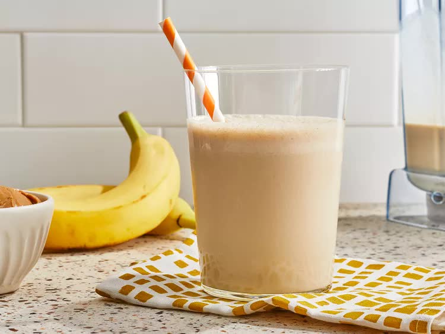

Peanut Butter Banana Smothie

Description
This peanut butter banana smoothie is so refreshing, and it's sweet and tasty.
This simple banana smoothie recipe is great for customizing. If you want to personalize your smoothie, here are some suggestions from Allrecipes home cooks:
- Try a variety of milks (soy, almond, cashew, etc.)
- Experiment with different nut butters
- Add a little cocoa powder
- Blend in some baby spinach
- Add ground flax seeds, chia seeds, or wheat germ
- Substitute Greek or flavored yogurt for the milk
Ingredients
- 2 bananas, broken into chunks
- 2 cups milk
- 0.5 cup peanut butter
- 2 tablespoons honey, or to taste
- 2 cups ice cubes
Steps
- Place bananas, milk, peanut butter, honey, and ice cubes in a blender.
- Blend until smooth, about 30 seconds.